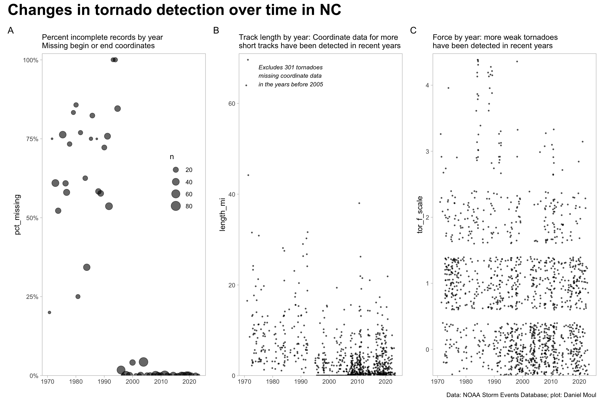
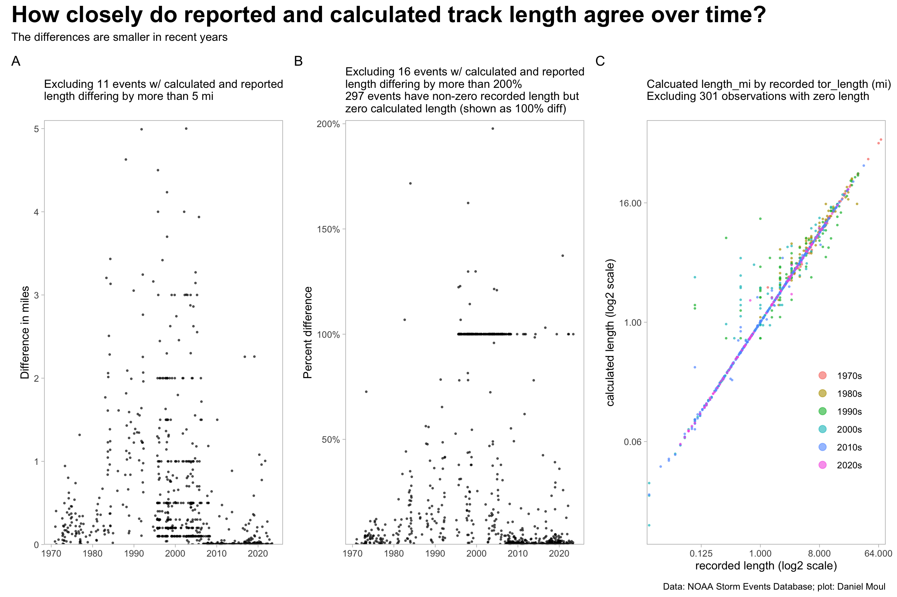
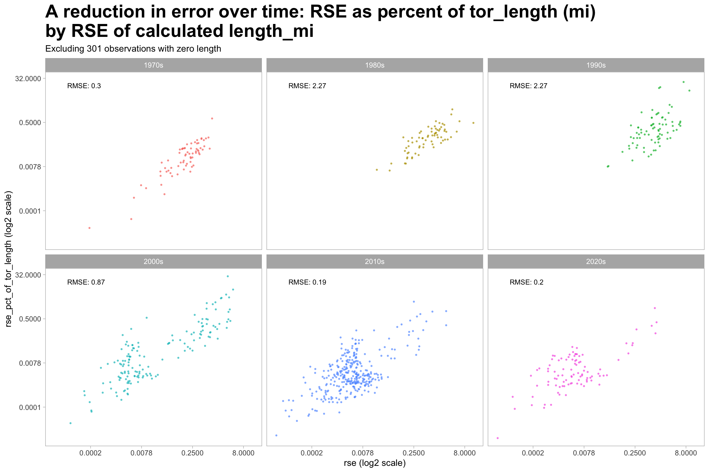

Show the code
source("./setup-and-data-prep.R")
n_zero <- dta_for_datacheck |>
filter(tor_length == 0 | length_mi== 0) |>
nrow()source("./setup-and-data-prep.R")
n_zero <- dta_for_datacheck |>
filter(tor_length == 0 | length_mi== 0) |>
nrow()As noted in the introduction, the data-generating processes have changed since 1970: over time the records include less missing data, more short-lived weak tornadoes, and more accurate coordinates.
The plots below reveal that prior to 1997 weak tornadoes and ones with short tracks were mostly missed or the data was incomplete. I presume the improvements were are due to the introduction of more automated means of identifying and estimating the force of these less significant tornadoes, for example, directly from radar or satellite data with sensors providing higher resolution data, and NWS staff using more powerful computers and more sophisticated algorithms (which seem more likely than a change in the frequency of weak, short-lived tornadoes over this time period).
Figure 4.1 provides evidence that the NWS offices started using better instruments. The reduction in missing coordinate data starting in 1996 is very impressive (panel A). So is the increase in the number of records of short-lived, weak tornadoes evident in panels B and C starting in the 2000s.
p1 <- dta_non_mapping |>
mutate(missing_data = is.na(begin_lat) | is.na(end_lat)) |> # if lat is missing, lon is missing too
summarize(n = n(),
n_missing = sum(missing_data),
n_not_missing = sum(!missing_data),
pct_missing = n_missing / n,
.by = year) |>
ggplot() +
geom_jitter(aes(year, pct_missing, size = n),
alpha = 0.6) + #size = 1,
scale_y_continuous(labels = label_percent(),
expand = expansion(mult = c(0, 0.02))) +
theme(panel.grid = element_blank(),
legend.position = c(0.85, 0.6)) +
labs(
subtitle = glue("Percent incomplete records by year",
"\nMissing begin or end coordinates"),
x = NULL,
tag = "A"
)
x_ann <- 1975
y_ann <- 0.95 * max(dta_for_datacheck$length_mi)
p2 <- dta_for_datacheck |>
ggplot() +
geom_jitter(aes(year, length_mi),
size = 0.5, alpha = 0.6) +
annotate("text", x = x_ann, y = y_ann,
label = glue("Excludes {n_zero} tornadoes",
"\nmissing coordinate data",
"\nin the years before 2005"),
hjust = 0, size = 3, fontface = 'italic') +
scale_y_continuous(expand = expansion(mult = c(0, 0.02))) +
theme(panel.grid = element_blank(),
legend.position = c(0.7, 0.2)) +
labs(
subtitle = "Track length by year: Coordinate data for more\nshort tracks have been detected in recent years",
x = NULL,
tag = "B"
)
p3 <- dta_non_mapping |>
ggplot() +
geom_jitter(aes(year, tor_f_scale),
size = 0.5, alpha = 0.6) +
scale_y_continuous(expand = expansion(mult = c(0, 0.02))) +
theme(panel.grid = element_blank(),
) +
labs(
subtitle = "Force by year: more weak tornadoes\nhave been detected in recent years",
x = NULL,
tag = "C"
)
p1 + p2 + p3 +
plot_annotation(
title = "Changes in tornado detection over time in NC",
caption = my_caption,
theme = theme(plot.title = element_text(size = rel(2.0), face = "bold"))
)
The differences in recorded and calculated track length have changed over time: a higher proportion of the differences are very small after about 2007 (with the exception of the 100% artifacts below).
Some observations arising from Figure 4.2:
See also Figure 1.6 NC tornado segment track measurement differences.
n_5mi <- dta_for_datacheck |>
filter(length_diff > 5) |>
nrow()
n_double <- dta_for_datacheck |>
filter(pct_diff > 2) |>
nrow()
n_calc_zero <- dta_for_datacheck |>
filter(tor_length > 0 & length_mi < 1e-6) |>
nrow()
p1 <- dta_for_datacheck |>
filter(length_diff <= 5) |>
ggplot() +
geom_jitter(aes(year, length_diff),
size = 0.5, alpha = 0.6) +
scale_y_continuous(expand = expansion(mult = c(0, 0.02))) +
theme(panel.grid = element_blank()) +
labs(
subtitle = glue("Excluding {n_5mi} events w/ calculated and reported\nlength differing by more than 5 mi"),
x = NULL,
y = "Difference in miles",
tag = "A"
)
p2 <- dta_for_datacheck |>
filter(pct_diff < 2) |>
ggplot() +
geom_jitter(aes(year, pct_diff),
size = 0.5, alpha = 0.6) +
scale_y_continuous(labels = label_percent(),
expand = expansion(mult = c(0, 0.02))) +
theme(panel.grid = element_blank()) +
labs(
subtitle = glue("Excluding {n_double} events w/ calculated and reported\nlength differing by more than 200%",
"\n{n_calc_zero} events have non-zero recorded length but\nzero calculated length (shown as 100% diff)"),
x = NULL,
y = "Percent difference",
tag = "B"
)
p3 <- dta_for_datacheck |>
filter(tor_length > 0,
length_mi > 0) |>
ggplot() +
geom_jitter(aes(tor_length, length_mi, color = decade),
size = 0.5, alpha = 0.6) +
scale_x_continuous(trans = "log2",
expand = expansion(mult = c(0.01, 0.02))) +
scale_y_continuous(trans = "log2",
labels = label_number(accuracy = 0.01)
#expand = expansion(mult = c(0, 0.02))
) +
theme(panel.grid = element_blank(),
legend.position = c(0.8, 0.3)) +
guides(color = guide_legend(override.aes = list(size = 3))) +
labs(
subtitle = glue("Calcuated length_mi by recorded tor_length (mi)",
"\nExcluding {n_zero} observations with zero length"),
x = "recorded length (log2 scale)",
y = "calculated length (log2 scale)",
color = NULL,
tag = "C"
)
p1 + p2 + p3 +
plot_annotation(
title = "How closely do reported and calculated track length agree over time?",
subtitle = "The differences are smaller in recent years",
caption = my_caption,
theme = theme(plot.title = element_text(size = rel(2.0), face = "bold"))
)
The improvement in measurement is visible in the reduction of error. Figure 4.3 plots root square error (RSE)1 on the X axis. The improvements are visible beginning in the 2000s both visually and in RMSE.
data_for_plot <- dta_for_datacheck |>
filter(tor_length > 0,
length_mi > 0) |>
mutate(rse = sqrt((tor_length - length_mi)^2),
rse_pct_of_tor_length = rse / tor_length)
rmse_data <- data_for_plot |>
reframe(rmse = sqrt(mean((tor_length - length_mi)^2)),
x = min(rmse),
y = max(rse_pct_of_tor_length),
.by = decade)
data_for_plot |>
ggplot() +
geom_point(aes(rse, rse_pct_of_tor_length, color = decade),
size = 0.5, alpha = 0.6,
show.legend = FALSE) +
geom_text(data = rmse_data,
aes(x = 0.00005, y = 16, label = paste0("RMSE: ", round(rmse, digits = 2)), # min(x), y = max(y)
hjust = 0),
size = 3) +
scale_x_continuous(trans = "log2",
#expand = expansion(mult = c(0.02, 0.02)),
labels = label_number(accuracy = 0.0001)) +
scale_y_continuous(trans = "log2",
#expand = expansion(mult = c(0.02, 0.02)),
labels = label_number(accuracy = 0.0001)
) +
facet_wrap(~decade) +
theme(panel.grid = element_blank(),
plot.title = element_text(size = rel(2.0), face = "bold"),
legend.position = c(0.8, 0.3)) +
guides(color = guide_legend(override.aes = list(size = 3))) +
labs(
title = "A reduction in error over time: RSE as percent of tor_length (mi)\nby RSE of calculated length_mi",
subtitle = glue("Excluding {n_zero} observations with zero length"),
x = "rse (log2 scale)",
y = "rse_pct_of_tor_length (log2 scale)",
color = NULL
)
“Root square error” is abs(error). I use this term, because I also summarize error by decade as “root mean square error” (RMSE)↩︎